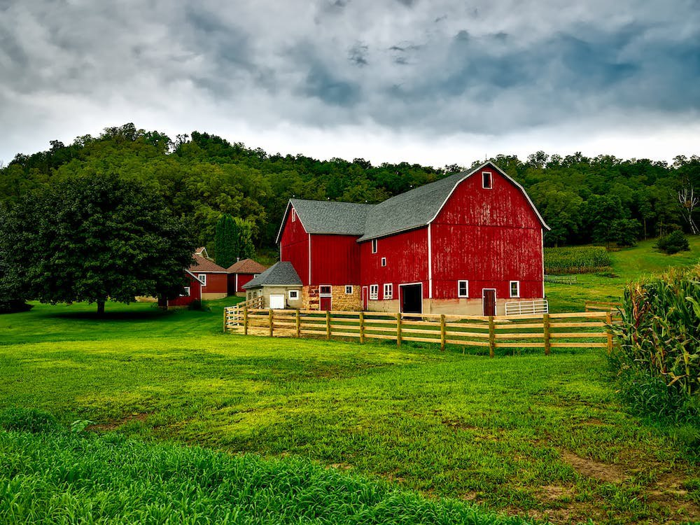
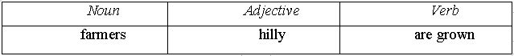

Lesson 2
UNIT 1
Agricultural development
BASIC AGRICULTURE

Farming
in Great Britain
Learn the active vocabulary of the Lesson and be ready to use it in your further work:
Arable
adj – орний;
arable
farming – рільництво;
cattle n -
велика рогата худоба;
cherry n – вишня;
dairyng n -
ведення молочного господарства;
farming
n, adj -
сільське господарство; землеробство; сільськогосподарський;
glasshouse
n - оранжерея, теплиця;
grasslands
n - сіножать, луг, пасовище;
grazing n -
пасіння, пасовище;
intensive adj – інтенсивний;
intensive farming -
інтенсивне господарство;
livestock n -
домашня худоба;
milking cow -
дійна корова;
orchard
n - плодовий (фруктовий) сад;
pastureland,
syn.pasture n - пасовище,
вигін,
випас;
pear
n – груша;
provide
v - забезпечувати,
постачати;
sheep
farming - вівчарське господарство;
specialize
(in) v - спеціалізовуватись (в);
stockrearing
n – скотарство;
pastoral
farming – скотарство;
arable
farming – землеробство;
organic
farming – органічне землеробство;
conventional
farming – традиційне землеробство;
integrated farming – інтегроване землеробство.
Read and translate the text:
FARMING
IN GREAT BRITAIN
The
main kinds of farming practised in Britain are hill-sheep farming, stockrearing,
dairying, mixed, intensive, and arable farming.
Each
farmer chooses the kind of farming which is best suited to his own land.
Many
farmers with rich, flat land have arable farms which grow crops. Farmers whose
land is suitable often keep milking cows on their dairy farms. Some farmers with
hilly land keep sheep and others specialize in pigs or poultry. And some farmers
grow crops and keep animals as well; their farms are called mixed farms.
The
kind of farming depends on many things: on climate, slope, soil and altitude.
There
are many pigs, poultry and dairy cows on the farms below Downs. This region has
many mixed farms, with some arable land for growing crops and some grasslands
for grazing cattle.
At
Wortthing, we see small farms which consist almost entirely of glasshouses, in
which there are cucumbers and tomatoes. This is an example of intensive farming,
where only one or two special crops are grown. When we drive north-east into
Kent we see another example of intensive farming: the orchards of cherry, pear
or apple trees and the hop-gardens. Hops are used in making beer.
The
arable farms of the Fens provide wheat and barley, potatoes and other vegetables
such as sugar beet. Much of livestock is kept on pasturelands of the West.
Types
of farming
The
climate and topography of the UK lends itself to two distinct types of farming.
Pastoral farming (the use of grass pasture for livestock rearing) is found in
areas of higher rainfall and among the hills, predominantly to the north and
west of the UK. Arable farming (land that can be ploughed to grow crops) is
concentrated in the south and east of the UK where the climate is drier and
soils are deeper. In the UK there are three main approaches adopted by farmers
in their farming system. These are defined as organic, conventional and
integrated.
Organic farming represents around 4% of the farmed area and is based upon the concept of sustainability utilizing the farm’s own resources. Conventional farming adopts modern technology and utilizes other inputs such as pesticides and artificial fertilizers while integrated farming makes the conventional approach sustainable. Most conventional farmers practice integrated farming. Media characterization of the UK’s farming systems has widely depicted organic farming as good with conventional as bad. This simplification misses the point as in practice a crossover of approaches exists on most farms. In the UK there are approximately 300,000 active farms with an average size of around 57 hectares, much larger than the European average size of approximately 20 hectares.
Write a report: what common and different features are there between farming in the UK and farming in Ukraine?
GRAMMAR EXERCISES
I. Answer the following questions:
1.
What are the main kinds of farming in Great Britain?
2.
What kind of farming does each farmer choose?
3.
What does the kind of farming depend on?
4.
What region has many mixed farms?
5.
What is intensive farming?
6.
What do arable farms provide?
7.
What is kept on pasturelands of the West?
8.
What
types of farming in Great Britain do you know?
9. What are three main approaches of farming system in the UK?
II. Group the following by parts of speech:

Intensive, crops, special, is suited, consist of, grassland, pastureland, chooses, are called, keep, glasshouses, to specialize in, farmers, arable, hilly, are grown, mixed, are used, beer, provide, livestock, is kept, dairy, region, depends on.
III. Find a common word:
1.
Sheep, pigs, livestock, cows.
2.
Wheat, barley, potatoes, crops, hops, sugar beet, tomatoes.
3. Arable farming, sheep farming, stockrearing, kind of farming, dairying.
IV. Build up sentences using the following words and expressions:
Keep milking cows, grow crops, mixed farms, slope, soil and altitude, mixed farms, some arable land, grasslands, glasshouses, livestock, pastoral farming, arable farming, organic farming, conventional farming, European average size.
V. Fill in the blanks with the necessary wors in brackets:
(Consist
of, depends on, grows, are kept, was watched, provide, specialize
in)
1. This farmer has rich land. He …crops. 2. Milking cows … on dairy farms. 3. Some farmers … in stockrearing. 4. Arable lands of this region …wheat and barley, potatoes and sugar beet. 5. These small farms … glasshouses. 6. The kind of farming … climate, slope, soil and altitude 7. The football …on the TV with great interest by everybody in our hostel.
VI. Match the terms with their corresponding definitions:
VII. Transform the sentences according to the model:
Зразок:
Farmers use hops
in making beer. (Активний стан).
Hops
are
used in
making beer. (Пасивний стан).
1. Farmers practice different kinds of farming in Great Britain. 2. Farmers choose the kind of farming. 3. This breed (порода) of cattle produces a great amount of meat. 4. The farmers form a new breed by crossing two another breeds. 5. Most farmers keep dairy herd (стадо) on mixed farms. 6. About 65 million years ago, a giant asteroid struck Earth and wiped out the dinosaurs. 7. Marsupials bear their young at a much earlier stage of development than other animals.
VIII. Translate the sentences into English:
1. На фермах з родючим ґрунтом вирощуються різні сільськогосподарські культури. 2. Змішані ферми – це ферми з орними землями для вирощування сільгоспкультур та пасовищами для випасу худоби. 3. Інтенсивне господарство– це господарство, де вирощуються лише одна або дві спеціальні культури. 4. Багато худоби утримується на пасовиськах у західному регіоні Британії. 5. Хміль використовують у виробництві пива. 6. Тип господарства залежить від клімату, рельєфу поверхні, грунту та ін. 7. Проблема механізації ферми буде вирішена в наступному році. 8. Ця робота буде завершена наступного тижня. 9. Ця ферма була побудована 10 років тому. 10. Група тісно пов’язаних видів називається рід.
IX. Make the sentences interrogative and negative according to the model:
Model: This
kind of farming is suited to this land.
Questions: Is
this kind of farming suited to this land? (general).
Why
is this kind of farming suited to this land? (special).
Is
this kind of farming suited to this land or not? (alternative).
This
kind of farming is suited to this land, isn`t it? (disjunctive).
Negatives: This
kind of farming is not suited to this land.
1. On this farm only one or two special crops are grown. 2. Milking cows are kept on dairy farms. 3. Domesticated birds are used for food or egg production. 4. Stock-rearing is used by many farmers. 5. Bacteria are found in various parts of the body. 6. Tuberculosis is found mostly in cattle, poultry and swine.
X. Agree or disagree with the statements:
Model
1: A.:
Sheep farming is not practised in Britain nowadays.
Do
you agree with me?
B.:
No, that’s wrong. Sheep farming is practised in Britain nowadays.
Model
2:
A.: Farmers grow crops and keep animals on mixed farms.
Do
you agree with me?
B.:
Yes, you are (quite) right.
Farmers
really grow crops and keep animals on mixed farms.
1. Farmers keep pigs on dairy farms. 2. Farmers with hilly lands grow
wheat and barley. 3. The kind of farming depends on climate, slope, soil and
altitude. 4. Arable lands don`t provide wheat, barley and other crops. 5. Much
of livestock is kept on pasturelands of the West.